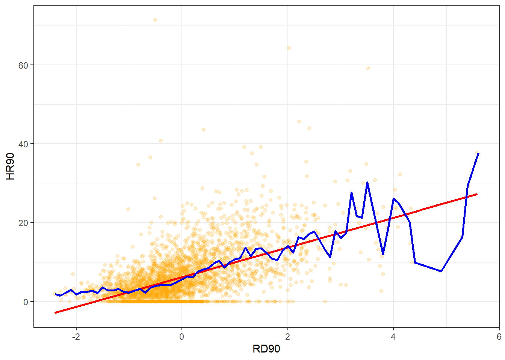
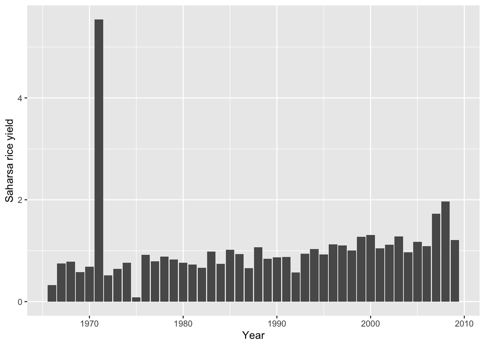
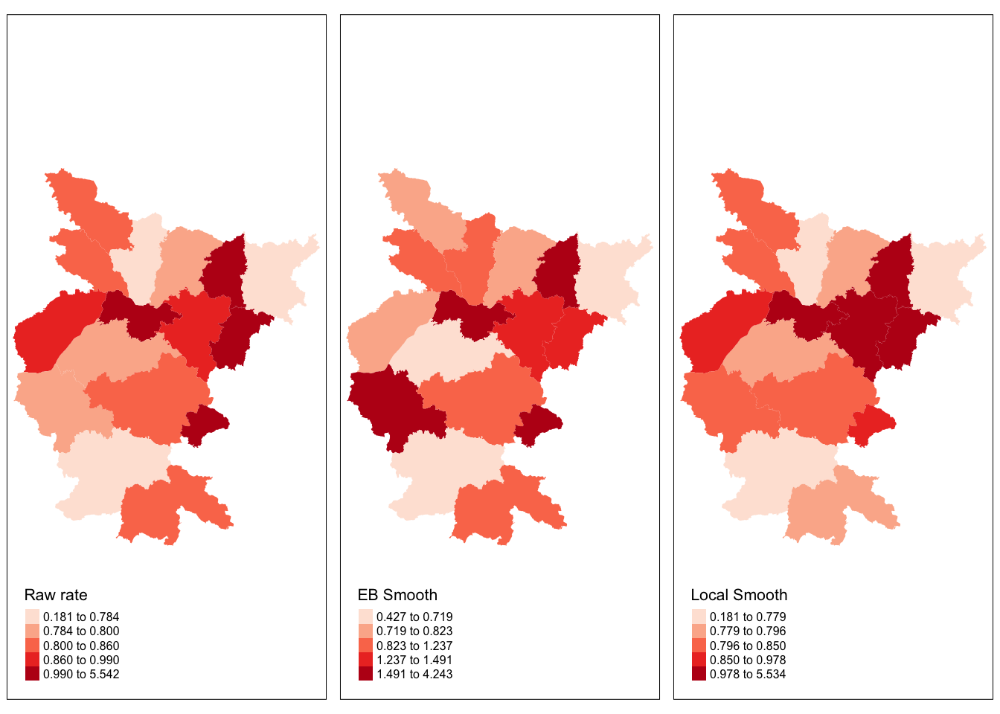
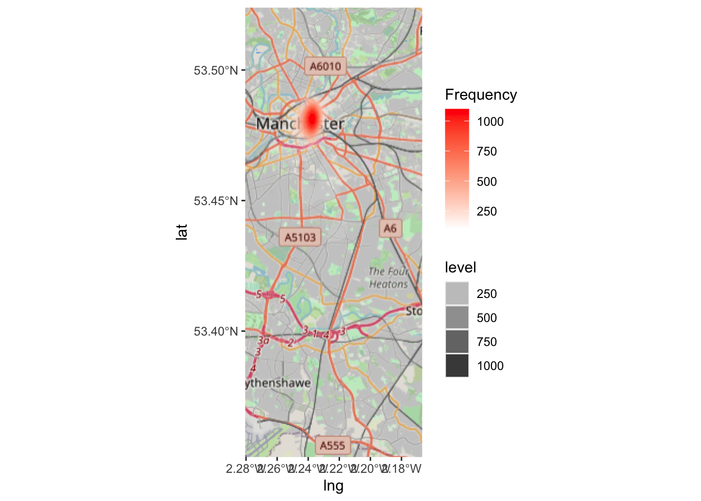
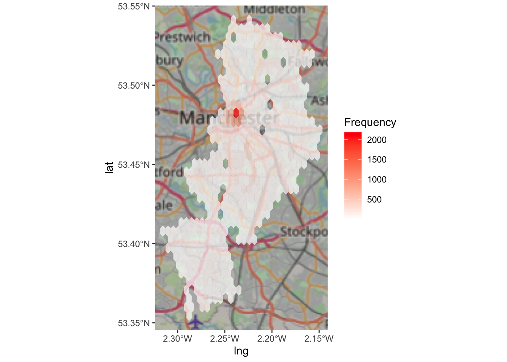
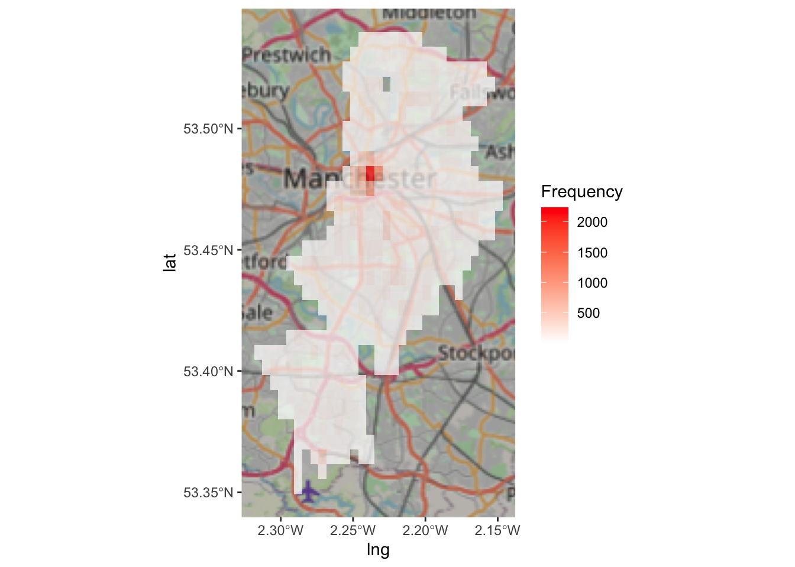
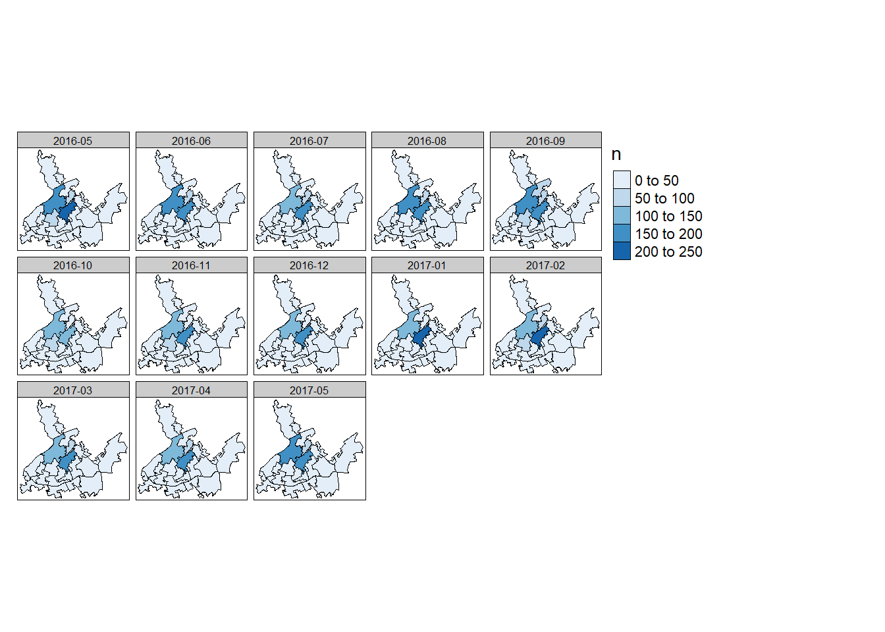

Chapter 5 More on thematic maps
In this session we are going to discuss some additional features around thematic maps we did not cover in week 3. We are going to discuss how to address some of the problems we confront when we are trying to use use choropleth maps, as well as some alternatives to point based maps. We will also introduce the modifiable area unit problem.
Before we do any of this, we need to load the libraries we will use today:
cartogramDClusterdplyrgeogridggplot2ggspatialhexbinjanitorsfspspdeptmapreadxlreadr
Some of the above are new packages we will use for the first time this week. Remember, if you don’t already have these you will need to install them.
5.1 Pro-tip: do I need to install this package?
You might have noticed that in your list of available packages you might see more than you remember downloading. The idea of dependencies has come up throughout the semester. Packages have dependencies when their code is dependent on (uses code from) another package. For example, if we write some code that we think will be useful, so we release this in the form of the package “manchesterR”, but we use ggplot2 in the code, then ggplot2 will be a dependency of manchesterR. As a default, R will install all the dependencies for a package when we install our package, manchesterR. So this way we might end up with some packages there that we didn’t realise we had.
Why are we telling you this? Well you should always check if you have a package, before installing it. And I wanted to share with you some neat code from a Stackoverflow discussion (if you are not yet familiar with Stackoverflow you have not been Google-ing your error messages enough) here to do this. We’ll comment it a bit, so you can follow along what it does but you don’t have to if you don’t want to. This is just an extra.
So as a first step, you have to assign a list of all the packages you have to check to an object. Let’s say I tell you that today we will be using the following packaes: “sp”, “rgdal”, “classInt”, “RColorBrewer”, “ggplot2”, “hexbin”, “ggmap”, “XML”, and “dplyr”. Then you can add these to an object called libs, using the c() function:
Now you can run the below bit of code, and you will see in the console an output of what is and isn’t installed, as well as install the packages that are not!
for (x in libs) {
# Check if the package is installed
if (!(x %in% rownames(installed.packages()))) {
# If not installed, print a message and install the package
cat("Installing ", x, "...\n")
install.packages(x)
} else {
# If installed, print a message
cat(x, "is already installed.\n")
}
# Load the package
library(x, character.only = TRUE)
}## sf is already installed.
## tmap is already installed.
## sp is already installed.
## spdep is already installed.
## DCluster is already installed.
## cartogram is already installed.As you can see if you read through the comments there, this bit of code checks each package in the list you pass to tbe libs object when you create it, and if it is not installed it installs for you, and if it is, it just loads it for you. It can be a handy bit of code to keep around.
We also want to introduce pacmac, developed by Dason Kurkiewicz, to make your life a lot easier in the realm of R packages. While the library() function does its job, but could be the tedious task, installing and loading each package one by one. The p_load() function, a single line code will automatically checks for missing missing packages and installs/loads all libraries into you R. So, try!
library(pacman)
p_load(cartogram, DCluster, dplyr, geogrid, ggplot2, ggspatial, hexbin, janitor, sf, sp, spdep, tmap, readxl, readr)5.1.1 Activity 1: Getting some messy data
So far, we’ve really been spoilt by using neat and easy-to-access data typical of ‘western’ countries. This week we will have a little exercise in using data when there may not be such clear ways to access neat and tidy data. Specifically, we’re going to look at some data from India! We’ll be using two datasets:
- A shapefile of India (including boundaries of ‘states’ and ‘districts’)
- District-level data on households and crop yields
First of all, a number of the big universities in the US have repositories (online collections) of GIS data (like shapefiles). There are a few of them that have India shapefiles (Harvard, Stanford) but you need to request access to them for research purposes. If you’re doing your own research and need the shapefile of a country, it’s worth looking on these repositories for it. You can then email them to request access and usually they’ll give access no problem if you’re using it for research. But for now, I’ve already requested access and downloaded the India shapefiles, but please note that these shapefiles are for the purposes of this workshop only. Here’s the link to download the shapefiles
TIP: Use this button to select all files at once, then just hit ‘Download’!
(if you are struggling with this, the files are in a .zip file on Blackboard as well)
You’ll notice that there are different shapefiles there, download them all for now. We will use them to demonstrate a good example of the problems you encounter when researching countries with less infrastructure. The UK has these ’LSOA’s we covered previously, which are areas that don’t change over time. In India, districts (like counties) are merged and split quite frequently and entire states (collections of districts) can merge and split too! So each shapefile we’ve downloaded will have different boundaries and different names for districts - so which one do we use?!
5.1.1.1 Activity 2: Getting some crop data (attributes)
You may be in a situation like the one described above, and you might want to consider for yourself - how can you decide what is the best shapefile to use? Well the answer will really depend on your data set! What is it that you want to represent, and what is the best matched shapefile for the job?
One way of deciding is to match each shapefile up with our data (like we did for crime in Manchester before) and checking which shapefile has the most matching district and state names with the dataset. So we’ll start by downloading the dataset.
There’s an amazing dataset called VDSA (Village Dynamics in South Asia) which covers much of India, containing both agricultural and socio-economic information. Unfortunately, the website interface isn’t great and downloading the data requires you to make a free account and download individual files for each state, which is a massive faff. So instead, I’ve already downloaded the crop production data for just one state, Bihar, and you can download it here (this too is also on BlackBoard)
Great, now let’s read that data into R and have a look!
Just like we read ‘.csv’ files with read.csv, we can read ‘.xlsx’ (Excel) files with the read_xlsx() function from the readxl package:
## Rows: 688
## Columns: 59
## $ STCODE <dbl> 2, 2, 2, 2, 2, 2, 2, 2, 2, 2, 2, 2, 2, 2, 2, 2, 2, 2, 2, 2, 2…
## $ STNAME <chr> "Bihar", "Bihar", "Bihar", "Bihar", "Bihar", "Bihar", "Bihar"…
## $ DIST <dbl> 901, 901, 901, 901, 901, 901, 901, 901, 901, 901, 901, 901, 9…
## $ DISTNAME <chr> "Champaran", "Champaran", "Champaran", "Champaran", "Champara…
## $ YEAR <dbl> 1966, 1967, 1968, 1969, 1970, 1971, 1972, 1973, 1974, 1975, 1…
## $ RICE_TA <dbl> 389.49, 430.45, 450.45, 467.07, 425.50, 447.35, 435.38, 433.3…
## $ RICE_TQ <dbl> 159.79, 338.03, 371.31, 286.41, 346.06, 373.39, 358.86, 322.5…
## $ WHT_TA <dbl> 76.45, 98.85, 113.13, 131.65, 131.65, 140.52, 306.58, 129.65,…
## $ WHT_TQ <dbl> 41.47, 84.97, 108.83, 159.96, 142.44, 229.13, 328.86, 257.18,…
## $ SORG_KA <dbl> 0.00, 0.00, 0.00, 0.00, 0.00, 0.01, 0.02, 0.00, 0.00, 0.02, 0…
## $ SORG_KQ <dbl> 0.00, 0.00, 0.00, 0.00, 0.00, 0.00, 0.01, 0.00, 0.00, 0.01, 0…
## $ SORG_RA <dbl> 0, 0, 0, 0, 0, 0, 0, 0, 0, 0, 0, 0, 0, 0, 0, 0, 0, 0, 0, 0, 0…
## $ SORG_RQ <dbl> 0, 0, 0, 0, 0, 0, 0, 0, 0, 0, 0, 0, 0, 0, 0, 0, 0, 0, 0, 0, 0…
## $ SORG_TA <dbl> 0.00, 0.00, 0.00, 0.00, 0.00, 0.01, 0.02, 0.00, 0.00, 0.02, 0…
## $ SORG_TQ <dbl> 0.00, 0.00, 0.00, 0.00, 0.00, 0.00, 0.01, 0.00, 0.00, 0.01, 0…
## $ PMLT_TA <dbl> 0.00, 0.00, 0.00, 0.00, 0.00, 0.07, 0.07, 0.07, 0.07, 0.14, -…
## $ PMLT_TQ <dbl> 0.00, 0.00, 0.00, 0.00, 0.00, 0.03, 0.04, 0.02, 0.03, 0.08, 0…
## $ MAIZ_TA <dbl> 33.56, 43.37, 42.01, 41.80, 44.71, 36.64, 39.89, 44.81, 38.19…
## $ MAIZ_TQ <dbl> 22.18, 37.56, 33.87, 28.77, 52.13, 17.61, 58.23, 46.04, 27.10…
## $ FMLT_TA <dbl> 1.65, 1.82, 1.60, 1.56, 1.48, 1.28, 1.60, 1.25, 1.28, 1.67, 1…
## $ FMLT_TQ <dbl> 0.61, 0.99, 0.56, 0.46, 0.85, 0.60, 0.92, 0.79, 0.62, 0.62, 1…
## $ BRLY_TA <dbl> 71.94, 73.87, 60.16, 54.02, 45.74, 39.25, 32.00, 34.79, 34.00…
## $ BRLY_TQ <dbl> 28.53, 47.83, 32.78, 29.92, 31.88, 32.38, 19.30, 15.84, 27.18…
## $ CERL_TA <dbl> 582.15, 666.16, 679.80, 708.12, 718.94, 740.40, 878.08, 702.4…
## $ CERL_TQ <dbl> -1.00, -1.00, -1.00, -1.00, -1.00, 697.53, 803.27, 671.87, 63…
## $ CPEA_TA <dbl> 8.29, 8.49, 6.10, 6.10, 3.71, 3.29, 4.17, 3.13, 2.65, 2.06, 1…
## $ CPEA_TQ <dbl> 4.11, 4.03, 2.59, 2.56, 1.40, 1.56, 2.08, 1.78, 1.85, 1.12, 0…
## $ PPEA_TA <dbl> 9.55, 11.29, 10.51, 10.51, 10.29, 8.93, 8.71, 7.56, 7.01, 6.1…
## $ PPEA_TQ <dbl> 6.53, 11.43, 10.57, 10.57, 6.90, 8.83, 9.57, 5.03, 5.64, 6.12…
## $ MPUL_TA <dbl> 63.32, 61.15, 56.50, 52.53, 50.19, 53.93, 149.34, -1.00, 47.5…
## $ PULS_TA <dbl> 81.16, 80.93, 73.11, 69.14, 64.19, 66.16, 162.22, -1.00, 57.1…
## $ PULS_TQ <dbl> -1.00, -1.00, -1.00, -1.00, -1.00, 34.15, 26.57, 21.64, 27.10…
## $ GNUT_TA <dbl> 0.05, 0.08, 0.07, 0.03, 0.01, 0.02, 0.09, 0.03, 0.07, 0.03, 0…
## $ GNUT_TQ <dbl> 0.03, 0.07, 0.03, 0.02, 0.03, 0.02, 0.07, 0.02, 0.07, 0.03, 0…
## $ SESA_TA <dbl> 0.99, 1.03, 1.77, 1.89, 1.01, 1.07, 1.42, 1.59, 1.20, 1.11, 1…
## $ SESA_TQ <dbl> 0.33, 0.39, 0.45, 0.60, 0.39, 0.54, 0.62, 0.59, 0.40, 0.24, 0…
## $ RM_TA <dbl> 8.17, 8.94, 10.27, 10.98, 10.98, 10.73, 10.60, 8.00, 9.42, 8.…
## $ RM_TQ <dbl> 2.57, 4.97, 4.48, 7.27, 7.28, 6.86, 6.16, 4.04, 4.87, 6.98, 7…
## $ SAFF_TA <dbl> 0.01, 0.00, 0.00, 0.00, 0.00, 0.00, 0.00, 0.00, 0.00, 0.00, 0…
## $ SAFF_TQ <dbl> -1, -1, -1, -1, -1, -1, -1, -1, -1, -1, -1, -1, -1, -1, -1, -…
## $ CAST_TA <dbl> 0.00, 0.00, 0.00, 0.00, 0.00, 0.00, 0.00, 0.16, 0.06, -1.00, …
## $ CAST_TQ <dbl> 0.00, 0.00, 0.00, 0.00, 0.00, 0.00, 0.00, 0.10, 0.04, -1.00, …
## $ LINS_TA <dbl> 0.00, 0.00, 0.00, 0.00, 0.00, 0.00, 0.00, 8.13, 9.32, -1.00, …
## $ LINS_TQ <dbl> 0.00, 0.00, 0.00, 0.00, 0.00, 0.00, 0.00, 5.21, 4.37, -1.00, …
## $ SUNF_TA <dbl> 0.00, 0.00, 0.00, 0.12, 0.00, 0.00, 0.00, 0.00, 0.00, 0.00, 0…
## $ SUNF_TQ <dbl> 0.00, 0.00, 0.00, 0.06, 0.00, 0.00, 0.00, 0.00, 0.00, 0.00, 0…
## $ SOYA_TA <dbl> 0.00, 0.00, 0.00, 0.00, 0.00, 0.00, 0.00, 0.00, 0.00, 0.00, 0…
## $ SOYA_TQ <dbl> 0.00, 0.00, 0.00, 0.00, 0.00, 0.00, 0.00, 0.00, 0.00, 0.00, 0…
## $ OILS_TA <dbl> 19.33, 20.51, 22.06, 21.67, 20.44, 20.51, 19.75, 18.65, 19.90…
## $ OILS_TQ <dbl> -1.00, -1.00, -1.00, -1.00, -1.00, -1.00, -1.00, 9.93, 9.66, …
## $ SCAN_TA <dbl> 46.20, 38.05, 46.11, 52.69, 56.30, 51.10, 50.20, 48.43, 50.54…
## $ SGUR_TQ <dbl> 150.80, 127.60, 193.30, 216.80, 251.50, 183.90, 200.70, 165.1…
## $ COTN_TA <dbl> 0.00, 0.00, 0.00, 0.00, 0.00, 0.00, 0.00, 0.00, 0.00, 0.00, 0…
## $ COTN_TQ <dbl> 0.00, 0.00, 0.00, 0.00, 0.00, 0.00, 0.00, 0.25, 0.00, 0.00, 0…
## $ FRUT_TA <dbl> 17.14, 16.09, 17.35, 16.09, 18.38, 18.08, 16.63, 17.42, 17.34…
## $ VEGT_TA <dbl> 16.58, 18.91, 21.81, 19.39, 21.10, 20.50, 21.76, 20.26, 21.55…
## $ TFV_TA <dbl> 33.72, 35.00, 39.16, 35.48, 39.48, 38.58, 38.39, 37.68, 38.89…
## $ POTA_TA <dbl> 4.28, 4.79, 7.04, 7.10, 7.30, 6.96, 7.66, 7.23, 8.01, 8.36, 8…
## $ ONIO_TA <dbl> 1.22, 1.39, 1.69, 1.63, 1.78, 1.56, 1.76, 1.74, 1.64, 1.95, 1…#option 2: import data
#Alternatively, you can download Bihar.xlsx from where we saved the data
#Important! note that I store it in on my Data folder You HAVE TO change that if needed.
download.file("https://www.dropbox.com/s/dddf1tjqg0l51gp/Bihar.zip?dl=1" ,
destfile="/data/Bihar.zip")
#Important! note that I extract file to the data folder. you HATE TO change exdir (the directory to extract files to)
unzip("/data/Bihar.zip", exdir = "/data/")
yield_data <- read_xlsx("data/Bihar.xlsx")After looking at the yield data, you can see it’s quite massive! Each column represents the production in weight (’_TQ’ columns) and the area farmed (’_TA’ columns) for each crop, per district, per year. That’s too much information for us! We just want rice production and area, so we’ll use the ‘select’ function to just pick the columns we want: names of states and districts, the year, and the rice information.
5.1.2 Activity 3: Comparing shapefiles
Now we’ve read in our rice yield data, we can test which shapefile will work best with the district names in our yield data. For this, we’ll use a basic ‘for’ loop which will test each shapefile (1951/61/71/81/91/2001) individually. This will show us which shapefile has the most matching district names (across India) with the yield data. Don’t worry about loops in R, they’re something you can learn if you’re interested but otherwise you can copy + paste the code below - so long as you understand what it’s doing overall. Chris’ advanced R will cover loops this week. N.B. You may need to change ‘shapefile_location <-’ to tell R where you have saved your shapefiles!
# Make a list of years between 1951 and 2001 at intervals every 10 years and store them as
# characters instead of numbers (so we can use them as names of files in the loop)
shapefile_years <- lapply(seq(1951, 2001, 10), as.character)
# Get a list of district names in the yield data to compare to each shapefile
yield_dist_names <- make_clean_names(unique(yield_data$distname))
# Prepare an output variable
district_match_results <- tibble(shapefile_year = character(),
district_match_percent = numeric())
# Loop through each item in the 'shapefile_years' list and call each item 'each_year'
for (each_year in shapefile_years){
# Change this if you need to, give the path to the directory with your shapefiles in
shapefile_location <- 'data/IndiaBoundaryData/'
# Read in each shapefile
each_shapefile <- st_read(paste0(shapefile_location, each_year, '.shp'))
# Get lists of each shapefile's district names
shpfile_dist_names <- make_clean_names(unique(each_shapefile$NAME))
# Get the percentage of matching district names between yield data and each shpfile
dist_match <- round(length(dplyr::intersect(yield_dist_names, shpfile_dist_names))/length(yield_dist_names)*100, 0)
# Store results in output variable
district_match_results <- bind_rows(district_match_results, tibble(shapefile_year = each_year,
district_match_percent = dist_match))
}## Reading layer `1951' from data source
## `/Users/user/Desktop/resquant/crime_mapping_textbook/data/IndiaBoundaryData/1951.shp'
## using driver `ESRI Shapefile'
## Simple feature collection with 316 features and 9 fields
## Geometry type: MULTIPOLYGON
## Dimension: XY
## Bounding box: xmin: 68.11009 ymin: 6.755698 xmax: 97.4091 ymax: 37.0503
## Geodetic CRS: WGS 84
## Reading layer `1961' from data source
## `/Users/user/Desktop/resquant/crime_mapping_textbook/data/IndiaBoundaryData/1961.shp'
## using driver `ESRI Shapefile'
## Simple feature collection with 341 features and 50 fields
## Geometry type: MULTIPOLYGON
## Dimension: XY
## Bounding box: xmin: 68.11009 ymin: 6.755698 xmax: 97.4091 ymax: 37.0503
## Geodetic CRS: WGS 84
## Reading layer `1971' from data source
## `/Users/user/Desktop/resquant/crime_mapping_textbook/data/IndiaBoundaryData/1971.shp'
## using driver `ESRI Shapefile'
## Simple feature collection with 360 features and 70 fields
## Geometry type: MULTIPOLYGON
## Dimension: XY
## Bounding box: xmin: 68.11009 ymin: 6.755698 xmax: 97.4091 ymax: 37.0503
## Geodetic CRS: WGS 84
## Reading layer `1981' from data source
## `/Users/user/Desktop/resquant/crime_mapping_textbook/data/IndiaBoundaryData/1981.shp'
## using driver `ESRI Shapefile'
## Simple feature collection with 426 features and 59 fields
## Geometry type: MULTIPOLYGON
## Dimension: XY
## Bounding box: xmin: 68.11009 ymin: 6.755698 xmax: 97.4091 ymax: 37.0503
## Geodetic CRS: WGS 84
## Reading layer `1991' from data source
## `/Users/user/Desktop/resquant/crime_mapping_textbook/data/IndiaBoundaryData/1991.shp'
## using driver `ESRI Shapefile'
## Simple feature collection with 468 features and 144 fields
## Geometry type: MULTIPOLYGON
## Dimension: XY
## Bounding box: xmin: 68.11009 ymin: 6.755698 xmax: 97.4091 ymax: 37.0503
## Geodetic CRS: WGS 84
## Reading layer `2001' from data source
## `/Users/user/Desktop/resquant/crime_mapping_textbook/data/IndiaBoundaryData/2001.shp'
## using driver `ESRI Shapefile'
## Simple feature collection with 595 features and 170 fields
## Geometry type: MULTIPOLYGON
## Dimension: XY
## Bounding box: xmin: 68.11009 ymin: 6.755698 xmax: 97.4091 ymax: 37.0503
## Geodetic CRS: WGS 84And now to check the output to see which shapefile has the highest proportion of district name matches:
## # A tibble: 6 × 2
## shapefile_year district_match_percent
## <chr> <dbl>
## 1 1951 72
## 2 1961 72
## 3 1971 89
## 4 1981 61
## 5 1991 61
## 6 2001 56# And plot it with ggplot
ggplot(district_match_results) +
geom_bar(aes(x = shapefile_year, y = district_match_percent), stat = 'identity')
So, before continuing you should look at the table and graph you’ve just made and decide which shapefile we should use now. Which one will be the best for representing your attribute table?
5.1.3 Activity 4: Joining datasets
One last thing before we can continue mapping - joining our yield and shapefile datasets together! Some name cleaning is required first, to make sure they match up. Hopefully you found before that the 1971 shapefile has the highest percentage of district name matches with our yield data - so we’ll read that one in now:
## Reading layer `1971' from data source
## `/Users/user/Desktop/resquant/crime_mapping_textbook/data/IndiaBoundaryData/1971.shp'
## using driver `ESRI Shapefile'
## Simple feature collection with 360 features and 70 fields
## Geometry type: MULTIPOLYGON
## Dimension: XY
## Bounding box: xmin: 68.11009 ymin: 6.755698 xmax: 97.4091 ymax: 37.0503
## Geodetic CRS: WGS 84# Clean the shapefile state and district names
shapefile <- janitor::clean_names(shapefile)
shapefile$name <- make_clean_names(shapefile$name)
shapefile$state_ut <- tolower(shapefile$state_ut)
# Clean the yield data's state and district names in the same way
# Using allow_dupes = TRUE means that repeated district names are not made into unique names
yield_data$distname <- make_clean_names(tolower(yield_data$distname), allow_dupes = TRUE)
yield_data$stname <- tolower(yield_data$stname)
# Join the two datasets together, the 'by' argument in right_join describes which columns
# are equivalent in each dataset
district_yields <- shapefile %>%
right_join(yield_data, by = c('name' = 'distname', 'state_ut' = 'stname')) %>%
dplyr::select(year, name, state_ut, rice_ta, rice_tq) %>% # 'select' only selects the columns we're interested in (specify select from dplyr!)
mutate(rice_yield = rice_tq/rice_ta) %>%
rename(district = name,
state = state_ut)
# Check output
head(district_yields)## Simple feature collection with 6 features and 6 fields
## Geometry type: MULTIPOLYGON
## Dimension: XY
## Bounding box: xmin: 84.68945 ymin: 24.95576 xmax: 86.07065 ymax: 25.73259
## Geodetic CRS: WGS 84
## year district state rice_ta rice_tq rice_yield geometry
## 1 1966 patna bihar 138.92 16.21 0.1166859 MULTIPOLYGON (((85.02075 25...
## 2 1967 patna bihar 220.10 211.13 0.9592458 MULTIPOLYGON (((85.02075 25...
## 3 1968 patna bihar 263.87 231.91 0.8788798 MULTIPOLYGON (((85.02075 25...
## 4 1969 patna bihar 262.85 178.89 0.6805783 MULTIPOLYGON (((85.02075 25...
## 5 1970 patna bihar 229.71 231.55 1.0080101 MULTIPOLYGON (((85.02075 25...
## 6 1971 patna bihar 189.13 320.56 1.6949188 MULTIPOLYGON (((85.02075 25...5.2 Mapping rates, learning from yield mapping
In previous sessions we discussed how to map rates. It seems a fairly straightforward issue, you calculate a rate by dividing your numerator (eg: number of crimes or rice production) by your denominator (eg: daytime population or farming area). You get your variable with the relevant rate and you map it using a choropleth map. However, things are not always that simple. Rates are funny animals. This popped up in your preparation material as the problem “insensitivity to sample size” and we will demonstrate in the next activity.
5.2.1 Activity 5: The case of Saharsa
Let’s look at our yield data, here yield means the amount of rice produced (in tonnes, 1 tonne = 1000kg) per hectare (a square of land with 100 metre-long sides) of rice farmland.
## Min. 1st Qu. Median Mean 3rd Qu. Max.
## 0.0000 0.7690 0.9935 1.0560 1.2223 5.5423We can see that the district with the highest rice production rate in 1971 had a rate of 55,423 kilograms of rice for each 100,000m\(^2\) area. That’s really high! Where is that place? I can tell you it’s a place call Saharsa. Check it out:
# This will show us the row with the highest yield
district_yields %>% filter(rice_yield == max(rice_yield)) ## Simple feature collection with 1 feature and 6 fields
## Geometry type: MULTIPOLYGON
## Dimension: XY
## Bounding box: xmin: 86.31699 ymin: 25.44194 xmax: 87.12818 ymax: 26.5624
## Geodetic CRS: WGS 84
## year district state rice_ta rice_tq rice_yield geometry
## 1 1971 saharsa bihar 204.86 1135.4 5.542322 MULTIPOLYGON (((87.04089 26...Saharsa district in Bihar, India is known for high quality corn, much of which is exported out here to the UK! But Saharsa isn’t particularly known for its great rice production. So, what’s going on here? Why do we have a high production rate (yield) in Saharsa that makes it look like the rice capital of India?
Well, we can see from the output above that this happened in 1971 in Saharsa, so let’s map out the yields of all districts in Bihar in 1971 to investigate:
(note for the next part with neighbours to work we have to remove the one polygon with the empty geometry with st_is_empty()
# remove district with empty geometry
district_yields <- district_yields %>% filter(!st_is_empty(.))
bihar_1971 <- filter(district_yields, year == '1971')
tm_shape(bihar_1971)+
tm_fill('rice_yield')
Saharsa is the darkly-shaded district in the top-right, it stands out massively from all other districts! Let’s plot the following year, 1972, for comparison:

Now Saharsa is in the lowest yield bracket - 0.2 to 0.4, pretty far off 5.5! Why does its yield value swing so far?
## [1] 204.86area_comparison <- district_yields %>%
group_by(district) %>%
summarise(mean_area = mean(rice_ta)) %>%
dplyr::select(district, mean_area)
ggplot(area_comparison) +
geom_col(aes(x = district, y = mean_area)) +
coord_flip()
Although it doesn’t have the smallest rice farmland area, Saharsa’s rice land is pretty small. Remember that the rate is simply dividing the number of relevant events (rice production) by the exposure variable (in this case area of rice farmland). Most times Saharsa has very low yields ( < 1 tonne per hectare):
saharsa_rice_yield <- filter(district_yields, district == 'saharsa')
ggplot(saharsa_rice_yield) +
geom_col(aes(x = year, y = rice_yield)) +
labs(x = "Year", y = "Saharsa rice yield")
Saharsa’s rice production is around 130 tonnes in most years. But it only takes one good year of rice growth and, bang, it goes to the top of the league. So a standard map of rates is bound to be noisy. There is the instability that is introduced by virtue of having areas that may be sparsely populated and in which one single event, like in this case a bumper crop, will produce a very noticeable change in the rate. In fact, if you look at the counties with the highest yields in the yield dataset you will notice all of them are places like Saharsa, areas that have small areas of rice farmland (RICE_TA). So they have high yields not because they produce massive amounts of rice, but because of the instability of rates.
This is a problem that was first noted by epidemiologists doing disease mapping. But a number of other disciplines have now noted this and used some of the approaches developed by public health researchers that confronted this problem when producing maps of disease (techniques and approaches used by spatial epidemiologists are very similar to those used by criminologists -in case you ever think of changing careers or need inspiration for how to solve a crime analysis problem).
5.2.2 Activity 6: Smoothing as a way to address insensitivity to sample size
One way of dealing with this is by smoothing the rates. This basically as the word implies aims for a smoother representation that avoids hard spikes associated with random noise. There are different ways of doing that. Some ways use a non-spatial approach to smoothing, using something called a empirical bayesian smoother. How does this work? This approach takes the raw rates and tries to “shrink” them towards the overall average.
The formal logic behind the idea of smoothing is situated in a Bayesian framework, in which the distribution of a random variable is updated after observing data. In the Empirical Bayes approach, values for \(\alpha\) and \(\beta\) of the prior Gamma distribution are estimated from the actual data. The smoothed rate is then expressed as a weighted average of the crude rate and the prior estimate.
What does this mean? Essentially, we compute a weighted average between the raw rate for each area and the global average across all areas, with weights proportional to the underlying population at risk. What this procedure does is to have the rates of smaller areas (those with a small population at risk) to have their rates adjusted considerably (brought closer to the global average), whereas the rates for the larger areas will barely change.
Here we are going to introduce the approach implemented in DCluster, a package developed for epidemiological research and detection of clusters of disease.
Specifically, we use the empbaysmooth(Observed, Expected) function, where we specify two values, the expected value (the global average) and the observed value (the rate we actually see).
res <- empbaysmooth(bihar_1971$rice_yield, bihar_1971$rice_ta*(sum(bihar_1971$rice_yield)/sum(bihar_1971$rice_ta)))In the new object we generate, which is a list, you have an element which contains the computed rates. We can add those to our dataset:
Alternatively instead of shrinking to the global rate, we can shrink to a rate based on the neighbours of each county. In this case, instead of shrinking to a global rate, we shrink to a local rate. We then may be able to take unobserved heterogeneity into account. For this we need the list of neighbours, therefore we can compute the rate of the areas that surround each county:
bihar_1971 <- bihar_1971 %>% mutate(neighbour = st_intersects(.))
#create the list of neighbours
w_sf <- list()
w_sf <- bihar_1971$neighbour
class(w_sf) <- "nb"And now that we have the list of neighbours, we can use the EBlocal() function, and here specify the count of cases (observed), the population at risk (or rice_TA in the case of our crop yields) and then finally the neighbours list we just created above (w_sf). The object produced (eb2) consists of two columns - the raw rates (equivalent to the rice_yield we already calculated) and the newly estimated rates:
eb2 <- EBlocal(bihar_1971$rice_tq, bihar_1971$rice_ta, w_sf)
bihar_1971$rice_yieldEBSL <- eb2$est
bihar_1971$neighbour <- NULLWe can now plot the maps and compare them :
## tmap style set to "col_blind"## other available styles are: "white", "gray", "natural", "cobalt", "albatross", "beaver", "bw", "classic", "watercolor"#map1: rice_yield, raw value
map1 <- tm_shape(bihar_1971) +
tm_fill("rice_yield", style="quantile", title = "Raw rate", palette = "Reds") +
tm_layout(legend.position = c("left", "bottom"),
legend.title.size = 0.8,
legend.text.size = 0.5)
#map2: rice_yieldEBS, global
map2<- tm_shape(bihar_1971) +
tm_fill("rice_yieldEBS", style="quantile", title = "EB Smooth", palette = "Reds") +
tm_layout(legend.position = c("left", "bottom"),
legend.title.size = 0.8,
legend.text.size = 0.5)
#map3: rice_yieldEBSL, local
map3<- tm_shape(bihar_1971) +
tm_fill("rice_yieldEBSL", style="quantile", title = "Local Smooth", palette = "Reds") +
tm_layout(legend.position = c("left", "bottom"),
legend.title.size = 0.8,
legend.text.size = 0.5)
tmap_arrange(map1, map2, map3) 
Notice that the quantiles are not the same, so that will make your comparison difficult!
5.3 Binning points
We’re going to move away from area-level data now, and go back to point-level data.
In GIS it is often difficult to present point-based data because in many instances there are several different points and data symbologies that need to be shown. As the number of different data points grows they can become complicated to interpret and manage which can result in convoluted and sometimes inaccurate maps. This becomes an even larger problem in web maps that are able to be depicted at different scales because smaller scale maps need to show more area and more data. This makes the maps convoluted if multiple data points are included.
In many maps there are so many data points included that little can be interpreted from them. In order to reduce congestion on maps many GIS users and cartographers have turned to a process known as binning.
Binning is defined as the process of grouping pairs of locations based on their distance from one another. These points can then be grouped as categories to make less complex and more meaningful maps.
Researchers and practitioners often require a way to systematically divide a region into equal-sized portions. As well as making maps with many points easier to read, binning data into regions can help identify spatial influence of neighbourhoods, and can be an essential step in developing systematic sampling designs.
This approach to binning generates an array of repeating shapes over a user-specified area. These shapes can be hexagons, squares, rectangles, triangles, circles or points, and they can be generated with any directional orientation.

5.3.1 The Binning Process
Binning is a data modification technique that changes the way data is shown at small scales. It is done in the pre-processing stage of data analysis to convert the original data values into a range of small intervals, known as a bin. These bins are then replaced by a value that is representative of the interval to reduce the number of data points.
Spatial binning (also called spatial discretization) discretizes the location values into a small number of groups associated with geographical areas or shapes. The assignment of a location to a group can be done by any of the following methods: - Using the coordinates of the point to identify which “bin” it belongs to. - Using a common variable in the attribute table of the bin and the point layers.
5.3.2 Different Binning Techniques
Binning itself is a general term used to describe the grouping of a dataset’s values into smaller groups (Johnson, 2011). The bins can be based on a variety of factors and attributes such as spatial and temporal and can thus be used for many different projects.
5.3.2.1 Choropleth maps
You might be thinking, “grouping points into a larger spatial unit, haven’t we already done this when making choropleth maps?”. In a way you are right. Choropleth maps are another type of map to that uses binning. Proportional symbol and choropleth maps group similar data points together to show a range of data instead of many individual points. We’ve covered this extensively, and is generally the best approch to consider spatial grouping of your point variables, because the polygons (shapes) to which you are aggregating your points are meaningful. You can group into LSOAs because you want to show variation in neighbourhoods. Or you can group into police force areas because you want to look at differences between those units of analysis. But sometimes there is just not a geography present to meet your needs.
Let’s say you are conducting some days of action in Manchester city centre, focusing on antisocial behaviour. You are going to put up some information booths and staff them with officers to engage with the local population about antisocial behaviour. For these to be most effective, as an analyst you decide that they should go into the areas with the highest count of antisocial beaviour. You want to be very specific about where you put these as well, and so LSOA level would be too broad, you want to zoom in more. One approach can be to split central Manchester into some smaller polygons, and just calculate the number of antisocial behaviour incidents recorded in each. That way you can then decide to put your information booths somewhere inside the top 5 highest count bins.
5.3.2.2 Rectangular binning
The aggregation of incident point data to regularly shaped grids is used for many reasons such as normalizing geography for mapping or to mitigate the issues of using irregularly shaped polygons created arbitrarily (such as county boundaries or block groups that have been created from a political process). Regularly shaped grids can only be comprised of equilateral triangles, squares, or hexagons, as these three polygon shapes are the only three that can tessellate (repeating the same shape over and over again, edge to edge, to cover an area without gaps or overlaps) to create an evenly spaced grid.
Rectangular binning is the simplest binning method and as such it heavily used. However, there are some reasons why rectangular bins are less preferable over hexagonal bins. Before we cover this, let’s have a look at hexagonal bins.
5.3.2.3 Hexagonal binning
In many applications binning is done using a technique called hexagonal binning. This technique uses hexagon shapes to create a grid of points and develops a spatial histogram that shows different data points as a range or group of pairs with common distances and directions. In hexagonal binning the number of points falling within a particular rectangular or hexagon in a gridded surface is what makes the different colors to easily visualize data (Smith, 2012). Hexagonnal binning was first developed in 1987 and today “hexbinning” is conducted by laying a hexagonal grid on top of 2-dimensional data (Johnson, 2011). Once this is done users can conduct data point counts to determine the number of points for each hexagon (Johnson, 2011). The bins are then symbolized differently to show meaningful patterns in the data.
5.3.3 Activity 7: Hexbinning
So how can we use hexbinning to solve our antisocial behaviour days of action task? Well let’s say we split Manchester city centre into hexagons, and count the number of antisocial behaviour instances in these. We can then identify the top hexagons, and locate our booths somewhere within these.
Also let’s get some data. You could go and get this data yourself from police.uk, we’ve been through all the steps for downloading data from there a few times now. But for now, I have a tidied set of data ready for you. This data is one year’s worth of antisocial behaviour from the police.uk data, from May 2016 to May 2017, for the borough of Manchester.
We can take our GMP crimes data, and select only the cases from ASB using the crime.type variable. If you want, however, I have already done this, so you can also download from my dropbox using the link here, (or get it from Blackboard):
## New names:
## Rows: 32162 Columns: 15
## ── Column specification
## ──────────────────────────────────────────────────────── Delimiter: "," chr
## (8): Month, Reported.by, Falls.within, Location, LSOA.code, LSOA.name, C... dbl
## (4): ...1, X, Longitude, Latitude lgl (3): Crime.ID, Last.outcome.category,
## Context
## ℹ Use `spec()` to retrieve the full column specification for this data. ℹ
## Specify the column types or set `show_col_types = FALSE` to quiet this message.
## • `` -> `...1`This is currently just a text dataframe, so we need to let R know that actually this is a spatial object, who’s geometry can be find in its longitude and latitude coordinates. As we have long/lat we can assure it’s in WGS 84 projection.
Now one thing that this does is it consumes our lng and lat columns into a geometry attribute. This is generally OK, but for the binning we will do, we would like to have them as separate coordinates. We can do this by adding the argument remove = FALSE to our st_as_sf function. We will also rename these coordinate columns to be lng and lat.
#extract the coords to some columns, "lng" and "lat"
sf_mcr_asb<- st_as_sf(mcr_asb, coords = c("Longitude", "Latitude"),
crs = 4326, agr = "constant", remove = FALSE) %>%
rename(lng = Longitude,
lat = Latitude)As a first step, we can plot asb in the borough of Manchester using simple ggplot! Remember the data visualisation session from weeks ago? We discussed how ggplot is such a great tool for building visualisations, because you can apply whatever geometry best suits your data. So for us to just have a look at the hexbinned version of our point data of antisocial behaviour, we can use the stat_binhex() function. We can also recreate the thematic map element, as we can use the frequency of points in each hex to shade each hexbin from white (least number of incidents) to red (most nuber of incidents).
So let’s have a go:
ggplot(sf_mcr_asb, aes(lng, lat)) + #define data and variables for x and y axes
stat_binhex() + #add binhex layer (hexbin)
scale_fill_gradientn(colours = c("white","red"), name = "Frequency") #add shading based on number of ASB incidents
Neat, but doesn’t quite tell us where that really dark hexbon actually is. So it would be much better if we could do this with a basemap as the background, rather than our grey ggplot theme.
Now, we can apply the same code as we used above, for the ggplot, to this ggmap, to add our hexbins on top of this basemap:
ggplot(sf_mcr_asb, aes(x = lng, y = lat)) +
annotation_map_tile() +
stat_binhex(alpha=0.7) + #add binhex layer (hexbin)
scale_fill_gradientn(colours = c("white","red"), name = "Frequency") #add shading based on number of ASB incidents## Zoom: 10
Now this should give you some more context! Woo!
So I mentioned we’d go over some reasons why you should consider aggregating into a hexagon grid rather than other shape:
- Hexagons reduce sampling bias due to edge effects of the grid shape. The edge effects of bounded space refers to the problem of truncated data that can skew the results of subsequent analyses (we’ll get to this in the next section). This is related to the low perimeter-to-area ratio of the shape of the hexagon. A circle has the lowest ratio but cannot tessellate to form a continuous grid. Hexagons are the most circular-shaped polygon that can tessellate to form an evenly spaced grid.
- This circularity of a hexagon grid allows it to represent curves in the patterns of your data more naturally than square grids.
- When comparing polygons with equal areas, the more similar to a circle the polygon is, the closer to the centroid the points near the border are (especially points near the vertices). This means that any point inside a hexagon is closer to the centroid of the hexagon than any given point in an equal-area square or triangle would be (this is due to the more acute angles of the square and triangle versus the hexagon).
- Hexagons are preferable when your analysis includes aspects of connectivity or movement paths. Due to the linear nature of rectangles, fishnet grids can draw our eyes to the straight, unbroken, parallel lines which may inhibit the underlying patterns in the data. Hexagons tend to break up the lines and allow any curvature of the patterns in the data to be seen more clearly and easily. This breakup of artificial linear patterns also diminishes any orientation bias that can be perceived in fishnet grids.
- If you are working over a large area, a hexagon grid will suffer less distortion due to the curvature of the earth than the shape of a fishnet grid.
- Finding neighbors is more straightforward with a hexagon grid. Since the edge or length of contact is the same on each side, the centroid of each neighbor is equidistant. However, with a fishnet grid, the Queen’s Case (above/below/right/left) neighbor’s centroids are N units away, while the centroids of the diagonal (Rook) neighbors are farther away (exactly the square root of 2 times N units away).
- Since the distance between centroids is the same in all six directions with hexagons, if you are using a distance band to find neighbors or are using the Optimized Hot Spot Analysis, Optimized Outlier Analysis or Create Space Time Cube By Aggregating Points tools, you will have more neighbors included in the calculations for each feature if you are using hexagonal grid as opposed to a fishnet grid.

5.3.4 Activity 8: Rectangular binning
Now, to again illustrate the differences of different approaches, let’s see what this map would look like with:
- rectangular binning:
ggplot(sf_mcr_asb, aes(x = lng, y = lat)) +
annotation_map_tile() +
stat_bin2d(alpha=0.7) +
scale_fill_gradientn(colours = c("white","red"),
name = "Frequency") ## Zoom: 10
- hexagonal binning:
ggplot(sf_mcr_asb, aes(x = lng, y = lat)) +
annotation_map_tile() +
stat_binhex(alpha=0.7) +
scale_fill_gradientn(colours = c("white","red"),
name = "Frequency")## Zoom: 10
- a simple “heatmap” (we will discuss these more thoroughly next week):
ggplot(sf_mcr_asb, aes(x = lng, y = lat)) +
annotation_map_tile() +
stat_density2d(aes(fill = ..level.., # value corresponding to discretized density estimates
alpha = ..level..),
geom = "polygon") + # creates the bands of differenc colors
## Configure the colors, transparency and panel
scale_fill_gradientn(colours = c("white","red"),
name = "Frequency") ## Warning: The dot-dot notation (`..level..`) was deprecated in ggplot2 3.4.0.
## ℹ Please use `after_stat(level)` instead.
## This warning is displayed once every 8 hours.
## Call `lifecycle::last_lifecycle_warnings()` to see where this warning was
## generated.## Zoom: 11
Look at the difference between the three maps (hex, rectangle, and density). How would your conclusions change if you were given these maps? Would you make different decisions about where to place your booths for the days of action? Why or why not? Discuss.
5.3.5 Multivariate binning
Multivariate binning is another binning method that lets you visualise slightly more complex data. In this method there can be many different variables consisting of different types of data. Like other binning methods the data is typically grouped with the sum or average of the data. Different types of symbology (such as size, shape and color) can also be used to represent this data as well.
We won’t be covering this here but just so you can have a look at some examples here.
5.3.6 Benefits of Binning
Because of the plethora of data types available and the wide variety of projects being done in GIS, binning is a popular method for mapping complex data and making it meaningful. Binning is a good option for map makers as well as users because it makes data easy to understand and it can be both static and interactive on many different map scales. If every different point were shown on a map it would have to be a very large scale map to ensure that the data points did not overlap and were easily understood by people using the maps.
According to Kenneth Field, an Esri Research Cartographer, “Data binning is a great alternative for mapping large point-based data sets which allows us to tell a better story without interpolation. Binning is a way of converting point-based data into a regular grid of polygons so that each polygon represents the aggregation of points that fall within it.”
By using binning to create categories of data maps are easier to understand, more accurate and more visually appealing.
Hexbin plots can be viewed as an alternative to scatter plots. The hexagon-shaped bins were introduced to plot densely packed sunflower plots. They can be used to plot scatter plots with high-density data.
5.4 A note of caution: MAUP
Now that we’ve shown you how to do a lot of spatial crime analysis, we wanted to close with some words of caution. Remember that everything you’ve learned here are just tools that you will be applying to data you are working with, but it’s up to you, the researcher, the analyst, the domain expert, to apply and use these with careful consideration and cautions. This discussion is very much part of spatial crime analysis, and an important field of thought.
I borrow here from George Renghert and Brian Lockwood:
When spatial analysis of crime is conducted, the analyst should not ignore the spatial units that data are aggregated into and the impact of this choice on the interpretation of findings. Just as several independent variables are considered to determine whether they have statistical significance, a consideration of multiple spatial units of analysis should be made as well, in order to determine whether the choice of aggregation level used in a spatial analysis can result in biased findings.
In particular, they highlight four main issues inherent in most studies of space:
- issues associated with politically bounded units of aggregation,
- edge effects of bounded space
- the modifiable aerial unit problem (MAUP)
- and ways in which the results of statistical analyses can be manipulated by changes in the level of aggregation.
In this lab we will focus on MAUP, but if you are interested in this kind of work, you should definitely read their paper to consider the other issues as well. There are techniques that can be used to alleviate each of the methodological difficulties, and they are described in accessible detail in their paper: Rengert, George F., and Brian Lockwood. “Geographical units of analysis and the analysis of crime.” Putting crime in its place. Springer, New York, NY, 2009. 109-122.
5.4.1 What is MAUP?
The Modifiable Areal Unit Problem (MAUP) is an important issue for those who conduct spatial analysis using units of analysis at aggregations higher than incident level. It is one of the better-known problems in geography and spatial analysis. This phenomenon illustrates both the need for considering space in one’s analysis, and the fundamental uncertainties that accompany real-world analysis.
The MAUP is “a problem arising from the imposition of artificial units of spatial reporting on continuous geographical phenomena, leading to artifacts or errors are created when one groups data into units for analysis.
The classic text on MAUP is the 1983 paper Openshaw, Stan. “The modifiable areal unit problem. CATMOG (Concepts and techniques in modern geography) 38.” Geo Abstracts, Norwich. 1984..
There are two distinct types of MAUP: Scale (i.e. determining the appropriate size of units for aggregation) and zone (i.e. drawing boundaries or grouping).
5.4.1.1 Scale
The scale problem involves results that change based on data that are analyzed at higher or lower levels of aggregation (Changing the number of units). For example, evaluating data at the state level vs. Census tract level.
The scale problem has moved to the forefront of geographical criminology as a result of the recent interest in small-scale geographical units of analysis. It has been suggested that smaller is better since small areas can be directly perceived by individuals and are likely to be more homogenous than larger areas. - Gerell, Manne. “Smallest is better? The spatial distribution of arson and the modifiable areal unit problem.” Journal of quantitative criminology 33.2 (2017): 293-318.
5.4.1.2 Zone
The zonal problem involves keeping the same scale of research (say, at the state level) but changing the actual shape and size of those areas.
The basic issue with the MAUP is that aggregate units of analysis are often arbitrarily produced by whom ever is in charge of creating the aggregate units. A classic example of this problem is known as Gerrymandering. Gerrymandering involves shaping and re-shaping voting districts based on the political affiliations of the resident citizenry.
The inherent problem with the MAUP and with situations such as Gerrymandering is that units of analysis are not based on geographic principles, and instead are based on political and social biases. For researchers and practitioners the MAUP has very important implications for research findings because it is possible that as arbitrarily defined units of analysis change shape findings based on these units will change as well.
When spatial data are derived from counting or averaging data within areal units, the form of those areal units affects the data recorded, and any statistical measures derived from the data. Modifying the areal units therefore changes the data. Two effects are involved: a zoning effect arising from the particular choice of areas at a given scale; and an aggregation effect arising from the extent to which data are aggregated over smaller or larger areas. The modifiable areal unit problem arises in part from edge effect.
If you’re interested, in particular about politics and voting, you can read this interesting piece to learn more about gerrymandering
5.4.2 Why does MAUP matter?
The practical implications of MAUP are immense for almost all decision-making processes involving GIS technology, since with the availability of aggregated maps, policy could easily focus on issues and problems which might look different if the aggregation scheme used were changed .
All studies based on geographical areas are susceptible to MAUP. The implications of the MAUP affect potentially any area level data, whether direct measures or complex model-based estimates. Here are a few examples of situations where the MAUP is expected to make a difference:
- The special case of the ecological fallacy is always present when Census area data are used to formulate and evaluate policies that address problems at individual level, such as deprivation. Also, it is recognised that a potential source of error in the analysis of Census data is ‘the arrangement of continuous space into defined regions for purposes of data reporting’
- The MAUP has an impact on indices derived from areal data, such as measures of segregation, which can change significantly as a result of using different geographical levels of analysis to derive composite measures .
- The choice of boundaries for reporting mortality ratios is not without consequences: when the areas are too small, the values estimated are unstable, while when the areas are too large, the values reported may be over-smoothed, i.e. meaningful variation may be lost .
- Gerell, Manne. “Smallest is better? The spatial distribution of arson and the modifiable areal unit problem.” Journal of quantitative criminology 33.2 (2017): 293-318.
5.4.3 What can we do?
Most often you will just have to remain aware of the MAUP and it’s possible effects. There are some techniques, that can help you address these issues, and the chapter pointed out at the beginning of this section is a great place to start to explore these. It is possible to use also an alternative, zone-free approach to mapping these crime patterns, perhaps by using kernel density estimation. Here we model the relative density of the points as a density surface - essentially a function of location (x,y) representing the relative likelihood of occurrence of an event at that point. We have covered KDE elsewhere in this course.
For the purposes of this course, it’s enough that you know of, and understand the MAUP and its implications. Always be smart when choosing your appropriate spatial unit of analysis, and when you use binning of any form, make sure you consider how and if your conclusions might change compared to another possible approach.
5.5 Transforming polygons
When you have meaningful spatial units of analysis in your polygons, for example you are interested specifically in Local Authorities, it might make sense to stick with what we did last week, and aggregate the points into these polygons to create thematic maps. However, while thematic maps are an accessible and visually appealing method for displaying spatial information, they can also be highly misleading. Irregularly shaped polygons and large differences in the size of areas being mapped can introduce misrepresentation. The message researchers want to get across might be lost, or even worse, misdirect the viewers to erroneous conclusions. This article provides a helpful discussion of the problem illustrating the case with UK election maps. It is worth reading.
Fortunately, there are many methods in R to enhance the legibility of geographic information and the interpretability of what it is trying to be communicated.
Broadly, the options are:
- cartogram
- hexmap
- grid
Selecting the appropriate method might depend on the research question being posed (e.g. clustering) and the data itself. Even once a method has been selected, there are different ways of operationalising them.
Let’s explore this using the example of the results of the 2016 EU referendum at Local Authority level, where remain areas clustered in London. A simple thematic map does not necessarily communicate this well because Local Authorities are both small and densely populated in London.
You can download the full set of EU referendum result data as a csv from the Electoral Commission webside. Let’s read it straight into R:
eu_ref <- read_csv("https://www.electoralcommission.org.uk/sites/default/files/2019-07/EU-referendum-result-data.csv")## Rows: 382 Columns: 21
## ── Column specification ────────────────────────────────────────────────────────
## Delimiter: ","
## chr (4): Region_Code, Region, Area_Code, Area
## dbl (17): id, Electorate, ExpectedBallots, VerifiedBallotPapers, Pct_Turnout...
##
## ℹ Use `spec()` to retrieve the full column specification for this data.
## ℹ Specify the column types or set `show_col_types = FALSE` to quiet this message.OKAY, now we need a shapefile to join it to. Remember when we got the Manchester lsoa shapefile with the boundary selector? Let’s go back, and this time get Local Authority Districts for England.
In this case that means select “English Districts, UAs and London Boroughs, 2011”:

Once you have the file, download, extract (unzip) and put the folder in your working directory. Mine is in a subfolder in my working directory called data, so I point R inside that folder to find my shape file.
## Reading layer `england_lad_2011_gen' from data source
## `/Users/user/Desktop/resquant/crime_mapping_textbook/data/England_lad_2011_gen/england_lad_2011_gen.shp'
## using driver `ESRI Shapefile'
## Simple feature collection with 326 features and 4 fields
## Geometry type: MULTIPOLYGON
## Dimension: XY
## Bounding box: xmin: 82644.8 ymin: 5349.399 xmax: 655976.9 ymax: 657599.5
## Projected CRS: OSGB36 / British National GridWe can now join the EU referendum data, as we have learned in the past weeks:
Now we can have a look at these data:

We can see that in smaller LAs we don’t even really see the result, as the boundary lines pretty much cover everything. Hmm. Now what we can do is transform the shapes.
5.5.1 Activity 9: Cartograms
The last thing we will do today is make some cartograms! Cartogram types of maps distort reality to convey information. They resize and exaggerate any variable on an attribute value.
There are different types of cartograms.
Density-equalizing (contiguous) cartograms are your traditional cartograms. In density-equalizing cartograms, map features bulge out a specific variable. Even though it distorts each feature, it remains connected during its creation. On the other hand, you can have Non-Contiguous Cartograms, where features in non-contiguous cartograms don’t have to stay connected. Finally, Dorling Cartogram (named after professor Danny Dorling) uses shapes like circles and rectangles to depict area. These types of cartograms make it easy to recognize patterns!

Now we can make our own as well, using the cartogram package.
Within that there is the cartogram() function, which takes 2 arguments, 1 - the shape file (it can be a SpatialPolygonDataFrame or an sf object), and 2 - the variable which it should use to distort the polygon by.
In our data set we have a variable “electorate” which refers to the total number of registered electors, which we will use to distort the polygons:
# construct a cartogram using the size of the electorate in each LA
eu_cartogram <- cartogram(eu_sf, "Electorate")Again this is some labour intensive work, much like the grid making, you have some time to chill now. Maybe read up on the maths behind this tranformation as well, in the paper Dougenik, J. A., Chrisman, N. R., & Niemeyer, D. R. (1985). An Algorithm To Construct Continuous Area Cartograms. In The Professional Geographer, 37(1), 75-81..
I do have a tip for you if you want to make sure the process does not take too long. You can set a parameter in the cartogram function which is the “itermax” parameter. This specifies the maximum number of iterations we are happy with. If you don’t specify it’s set to 15. Let’s set to 5 for the sake of speed:
# construct a cartogram using the size of the electorate in each LA
eu_cartogram <- cartogram_cont(eu_sf, "Electorate", itermax = 5)And if your cartogram has been created, you can now plot again the referendum results, but using the electorate to change the size of the local authority:
# plot the percentage voting leave onto our cartogram
ggplot() +
geom_sf(data = eu_cartogram, aes(fill = Pct_Leave)) 
We can now see London much better, and see that darker coloured cluster where much smaller percentage of people voted leave.
Okay that’s probably enough for the day. Nice work crime mappers!
5.6 References and further reading
5.6.1 Binning
- Johnson, Zachary Forest. (18 October 2011). “Hexbins!” Retrieved from: http://indiemaps.com/blog/2011/10/hexbins/ (8 August 2014).
- Smith, Nate. (25 May 2012). “Binning: An Alternative to Point Maps.” Mapbox. Retrieved from: https://www.mapbox.com/blog/binning-alternative-point-maps/ (8 August 2014).
- Claudia A Engel’s fantastic R-pub on Making Maps in R.
- Hexbin Graph Gallery
- US Drought Hexmap
- Hexbin with ggplot2
5.6.2 MAUP
- Gerell, Manne. “Smallest is better? The spatial distribution of arson and the modifiable areal unit problem.” Journal of quantitative criminology 33.2 (2017): 293-318.
- Openshaw, Stan. “The modifiable areal unit problem. CATMOG (Concepts and techniques in modern geography) 38.” Geo Abstracts, Norwich. 1984..
- Rengert, George F., and Brian Lockwood. “Geographical units of analysis and the analysis of crime.” Putting crime in its place. Springer, New York, NY, 2009. 109-122.
5.6.3 Transforming polygons
- Waldo Tobler (2004) Thirty Five Years of Computer Cartograms, Annals of the Association of American Geographers, 94:1, 58-73, DOI: 10.1111/j.1467-8306.2004.09401004.x
- Langton, S.H. & Solymosi, R. (2018) ‘Visualising geographic information: examining methods of improving the thematic map.’ RPubs. Available: https://rpubs.com/langton_/visual_geography_study